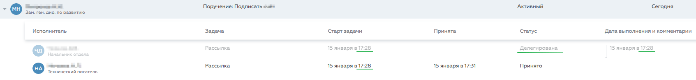

|
<< Click to Display Table of Contents >> Путь: Раздел "Задачи" > Делегирование задач |
Делегирование задачи – переадресация всех обязанностей и ответственности по задаче другому сотруднику.
Делегирование может быть:
•автоматическое – система переадресовывает задачи отсутствующего сотрудника его заместителю;
•пользовательское – по команде пользователя.
▪В случае назначенного замещения все задачи сотрудника делегируются его заместителю до тех пор, пока замещение не будет отменено вручную.
▪Делегировать можно как задачу по процессу, так и задачу по поручению (кроме своего поручения – задача "Поручение" в группе Поручил).
▪Задачу можно делегировать только одному сотруднику.
▪Делегированная задача пропадает из списка задач делегировавшего пользователя (и в группу Поручил не попадает).
▪Задачу можно делегировать обратно.
▪Записи о делегировании задачи можно посмотреть в карточке задачи на вкладке История процесса/История поручения, а также в карточке документа на вкладке История движения.
Автоматическое делегирование – система автоматически перенаправляет задачи отсутствующего сотрудника его заместителю.
При автоматическом делегировании в истории задачи и в истории движения документа фиксируется информация:
•задача поступила отсутствующему сотруднику и его заместителю;
•время поступления задачи (совпадает у обоих сотрудников);
•в статусе задачи отсутствующего сотрудника указывается "Делегирована".

Пользовательское делегирование – сотрудник переадресовывает все обязанности и ответственность по задаче другому сотруднику. Пользовательское (ручное) делегирование выполняетс с помощью кнопки в карточке задачи:
Кнопка "Делегировать" в карточке задачи
Чтобы делегировать свою задачу другому сотруднику:
1.В карточке задачи нажмите .
2.В открывшемся окне в поле Новый исполнитель укажите фамилию сотрудника, которому хотите переадресовать задачу.
3.В поле Комментарий для нового исполнителя напишите пояснение по делегируемой задаче. Это поле заполнять необязательно, но пояснение поможет новому исполнителю быстрее сориентироваться и приступить к выполнению задачи.
4.Нажмите кнопку Делегировать.
В результате делегированная задача пропадёт из списка ваших задач и поступит новому исполнителю, в истории задачи добавятся две записи: Исполнитель 1 делегировал задачу Исполнителю 2, Исполнителю 2 назначена задача:
История задачи при ручном делегировании